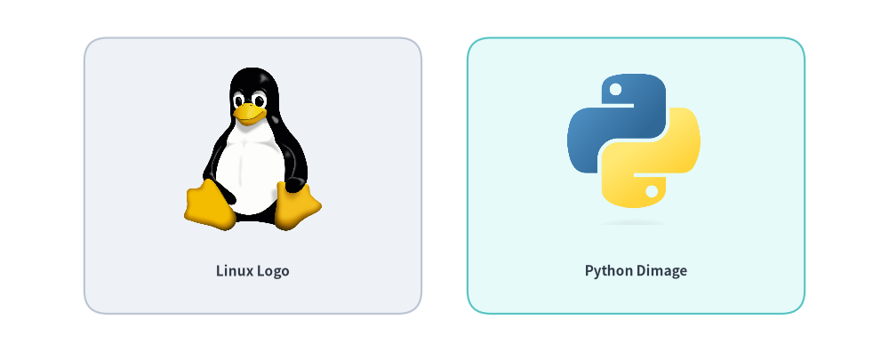
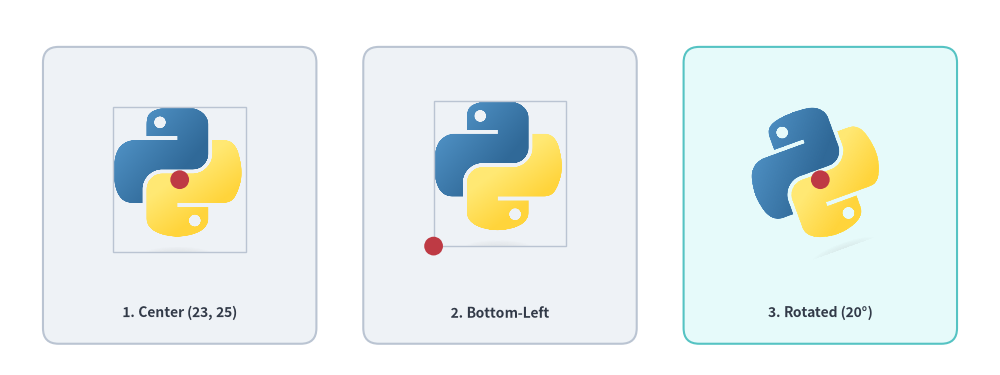
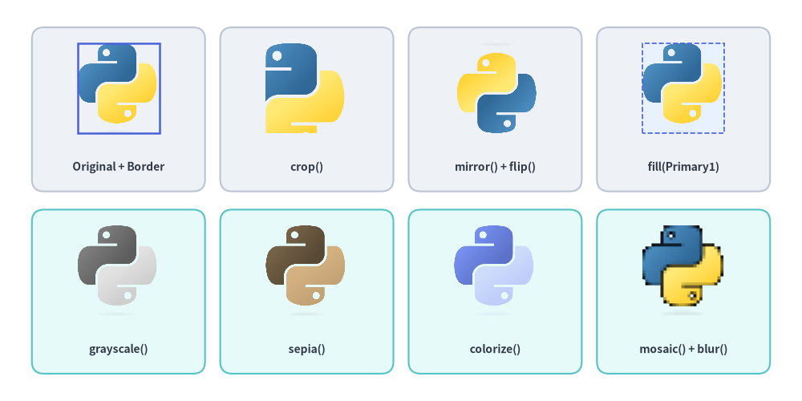
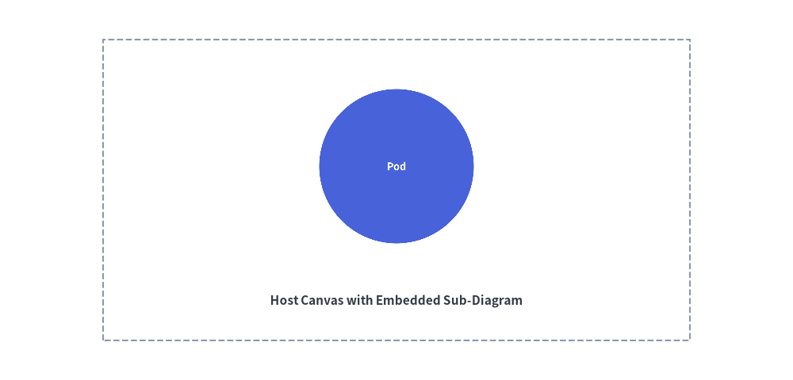

画像と Dimage
Drawlib では、外部のビットマップ画像やベクター画像を図解内に直接埋め込むことができます。
ラスター画像（企業ロゴ、クラウドサービスアイコン、アプリケーションのスクリーンショットなど）をベクター図形や注釈と組み合わせたり、イミュータブルなインメモリ画像モデル Dimage を使ってプログラマティックに画像を加工したりできます。

Source Code
from drawlib.canvas import save, setup
from drawlib.images import Dimage, image
from drawlib.shapes import rectangle
from drawlib.styles import Styles
from drawlib.text import text
setup(width=116, height=46)
# Card 1: Local image file
rectangle((33, 23), width=44, height=36, style=Styles.Neutral.patch(shape_r=3))
image((33, 26.5), width=18, image="../_assets/linux.png")
text((33, 10.5), "Linux Logo", style=Styles.DarkBold.patch(text_size=11.0))
# Card 2: Memory Dimage
rectangle((83, 23), width=44, height=36, style=Styles.SecondaryNeutral.patch(shape_r=3))
dimg = Dimage("../_assets/python.png")
image((83, 26.5), width=18, image=dimg)
text((83, 10.5), "Python Dimage", style=Styles.DarkBold.patch(text_size=11.0))
save()
1. 概要とインポート
画像の配置関数およびインメモリ加工クラスは drawlib.images からインポートします。
from drawlib.images import (
Dimage, # Immutable PIL Image wrapper with 20+ geometric & artistic transforms
get_dimage_from_code, # Render a Drawlib Python snippet in an isolated subprocess to a Dimage
image, # Draw a file path, PIL Image, or Dimage onto the canvas
)
2. 画像の配置とスタイル設定 (image)
image() 関数は、元のアスペクト比を自動的に維持しながらキャンバスの座標 xy に画像を配置します。
image(
xy: tuple[float, float],
width: float,
image: str | os.PathLike | Image.Image | Dimage,
*,
style: Style | None = None,
) -> None
| パラメータ | 型 | デフォルト | 説明 |
|---|---|---|---|
xy |
tuple[float, float] |
必須 | キャンバス単位でのアンカー座標 (x, y)（デフォルトは中央基準）。 |
width |
float |
必須 | キャンバス単位での水平幅。高さは画像のアスペクト比から自動計算されます。 |
image |
str | Image.Image | Dimage |
必須 | ファイルパス（.png、.jpg、.webp、呼び出し元スクリプト基準で相対解決）、PIL Image.Image、または Dimage。 |
style |
Style | None |
None |
外枠フレーム、背景色塗り、配置揃え、回転、不透明度を制御する任意の Style。 |
2.1. Style の画像・座標変換属性
image() に style= を渡す際、.patch() を使って画像専用の image_* 属性と共通の空間変換属性を設定できます。
Style 属性 |
型 | デフォルト | 説明 |
|---|---|---|---|
image_tint_color |
Color | tuple | str | None |
None |
Dimage.fill(color) により、画像の透過背景ピクセルを単色で塗りつぶします。 |
image_border_color |
Color | tuple | str | None |
(0, 0, 0) |
画像の外周に沿って描画する矩形枠線の色。 |
image_border_width |
float | None |
0 |
ポイント単位の枠線の太さ（0 または None で枠線なし）。 |
image_border_style |
"solid" | "dashed" | "dotted" | "dashdot" |
"solid" |
画像外枠の破線パターン。 |
halign |
"left" | "center" | "right" |
"center" |
xy[0] に対する水平方向のアンカー配置揃え。 |
valign |
"bottom" | "center" | "top" |
"center" |
xy[1] に対する垂直方向のアンカー配置揃え。 |
xy_shift |
tuple[float, float] | None |
None |
angle の回転に追従する相対 (dx, dy) 座標シフト。 |
xy_abs_shift |
tuple[float, float] | None |
None |
angle に依存しない絶対 (dx, dy) 座標シフト。 |
angle |
float | None |
0.0 |
画像中心を基準とした反時計回りの回転角（度）。 |
alpha |
float | None |
1.0 |
画像および外枠全体の不透明度（0.0 の完全透明から 1.0 の完全不透明まで）。 |
[!IMPORTANT] 回転時は中央揃えが必須 (
angle != 0):style.angleに0以外の値を指定する場合、image()は中央アンカー（halign="center",valign="center"）を必要とします。angle != 0と同時に中央以外のhalignやvalignが渡された場合、Drawlib は警告を出力して自動的に"center"にリセットします。
2.2. アンカー配置揃えと回転の例
デフォルトでは、(x, y) は画像の幾何中心をアンカーとします。style.patch(halign="left", valign="bottom") で左下隅アンカーに切り替えたり、style.patch(angle=...) で中央基準のまま画像を回転させたりできます。
from drawlib.canvas import save, setup
from drawlib.images import image
from drawlib.shapes import circle, rectangle
from drawlib.styles import Colors, Styles
from drawlib.text import text
setup(width=128, height=48, grid=True)
img_path = "../_assets/python.png"
framed = Styles.Neutral.patch(image_border_width=1.0, image_border_color=Colors.Gray4)
lbl_st = Styles.DarkBold.patch(text_size=10.0)
# 1. Default center anchor at xy=(23, 25)
rectangle((23, 23), width=35, height=38, style=Styles.Neutral.patch(shape_r=2))
image((23, 25), width=17, image=img_path, style=framed)
circle((23, 25), radius=1.2, style=Styles.DangerFlat)
text((23, 8.0), "1. Center (23, 25)", style=lbl_st)
# 2. Bottom-left anchor at xy=(55.5, 16.5)
rectangle((64, 23), width=35, height=38, style=Styles.Neutral.patch(shape_r=2))
bl_style = framed.patch(halign="left", valign="bottom")
image((55.5, 16.5), width=17, image=img_path, style=bl_style)
circle((55.5, 16.5), radius=1.2, style=Styles.DangerFlat)
text((64, 8.0), "2. Bottom-Left", style=lbl_st)
# 3. Rotated center placement at xy=(105, 25)
rectangle((105, 23), width=35, height=38, style=Styles.SecondaryNeutral.patch(shape_r=2))
rot_style = Styles.Neutral.patch(angle=20)
image((105, 25), width=17, image=img_path, style=rot_style)
circle((105, 25), radius=1.2, style=Styles.DangerFlat)
text((105, 8.0), "3. Rotated (20°)", style=lbl_st)
save()

3. インメモリ画像加工 (Dimage)
Dimage は PIL.Image.Image オブジェクトをイミュータブルかつメソッドチェーン可能な API でラップしたクラスです。すべての変換メソッドは元の Dimage を変更せず、常に新しい Dimage インスタンスを返します。
from drawlib.images import Dimage
from drawlib.styles import Colors
# 1. Load from file (or wrap an existing PIL Image / Dimage)
dimg = Dimage("../_assets/python.png")
# 2. Inspect pixel dimensions
width_px, height_px = dimg.get_image_size()
# 3. Fill transparent background pixels with a solid color (keeps opaque foreground intact)
filled_bg = dimg.fill(Colors.Primary1)
# 4. Chain geometric and artistic filters immutably
processed = dimg.mirror().grayscale().brightness(1.1)
[!NOTE]
dimg.fill(color)の仕様:dimg.fill(color)は透過背景ピクセルをcolorで塗りつぶします（半透明のエッジ部分はcolorの上にアルファ合成しつつ、不透明な前景ピクセルはそのまま保持します）。前景の色調自体を染め替えたい場合は、dimg.colorize(from_black_to=..., from_white_to=...)を使用してください。
3.1. 入出力・複製・情報取得メソッド
| コンストラクタ／メソッド | シグネチャ | 説明 |
|---|---|---|
Dimage() |
Dimage(image: str | PathLike | Dimage | Image.Image, copy: bool = False) |
ファイルパス（呼び出し元スクリプト基準で相対解決）、PIL Image.Image、または別の Dimage から Dimage を初期化します。 |
get_image_size() |
get_image_size() -> tuple[int, int] |
ピクセル寸法 (width, height) を返します。 |
get_pil_image() |
get_pil_image() -> Image.Image |
内部の PIL.Image.Image の防御的コピーを返します。 |
copy() |
copy() -> Dimage |
ディープコピーした Dimage インスタンスを返します。 |
save() |
save(file: str, quality: int = 95) -> None |
画像を file に書き出します（必要に応じて親ディレクトリを自動作成。quality は 0..100、デフォルト 95）。 |
3.2. 幾何変換・クロップメソッド（5 メソッド）
| メソッド | シグネチャ | 説明 |
|---|---|---|
resize() |
resize(width: int, height: int, resample: str = "lanczos") -> Dimage |
"nearest"、"box"、"bilinear"、"hamming"、"bicubic"、または "lanczos" を用いて (width, height) ピクセルにリサイズします。 |
crop() |
crop(x: int, y: int, width: int, height: int) -> Dimage |
Drawlib のデカルト座標系に合わせて左下隅を原点 (0, 0) とした (width, height) ピクセル領域を切り抜きます。 |
trim() |
trim(color: str | Color | tuple | None = "auto", tolerance: int = 0) -> Dimage |
周囲の均一な余白を自動トリミングします（"auto" は四隅から背景色または透過を自動検出、None は透明アルファ余白を除去、tolerance は 0..255）。 |
flip() |
flip() -> Dimage |
画像を上下（垂直方向）に反転します。 |
mirror() |
mirror() -> Dimage |
画像を左右（水平方向）に鏡像反転します。 |
3.3. 透過・背景処理メソッド（3 メソッド）
| メソッド | シグネチャ | 説明 |
|---|---|---|
fill() |
fill(color: Color | tuple[int, int, int]) -> Dimage |
透過背景ピクセルを color で塗りつぶします（半透明エッジを color 上にアルファ合成し、不透明な前景ピクセルは維持します）。 |
make_transparent() |
make_transparent(color: str | Color | tuple | Literal["auto"] = "auto", tolerance: int = 0) -> Dimage |
単色の背景色（"auto" 時は四隅から自動検出、または許容差 tolerance 0..255 内の指定色）を透明アルファ（RGBA）に変換します。 |
alpha() |
alpha(alpha: float) -> Dimage |
ピクセルの不透明度の上限を alpha（0.0〜1.0）に制限します（もともと alpha より低い透過度を持つピクセルはそのまま維持されます）。 |
3.4. 色調・アートフィルタメソッド（9 メソッド）
| メソッド | シグネチャ | 説明 |
|---|---|---|
grayscale() |
grayscale() -> Dimage |
アルファチャンネルを保持したままグレースケール（LA モード）に変換します。 |
sepia() |
sepia() -> Dimage |
アルファマスクを保持したまま温かみのあるセピア調を適用します。 |
invert() |
invert() -> Dimage |
アルファチャンネルを保持したまま RGB 各チャンネルを階調反転（255 - c）します。 |
brightness() |
brightness(brightness: float = 0.5) -> Dimage |
画像の明度をスケーリングします（1.0 = 変化なし、< 1.0 = 暗くする、> 1.0 = 明るくする。デフォルト 0.5）。 |
colorize() |
colorize(from_black_to: ColorType, from_white_to: ColorType, from_mid_to: ColorType | None = None) -> Dimage |
アルファを保持したまま、グレースケール輝度の黒を from_black_to、白を from_white_to、任意の中間調を from_mid_to にマッピングします。 |
posterize() |
posterize(num_colors: int = 4) -> Dimage |
アルファを保持したまま RGB 各チャンネルの色深度ビット数を削減します（num_colors ビット、デフォルト 4）。 |
mosaic() |
mosaic(block_size: int = 8) -> Dimage |
画像を block_size × block_size の平均色ブロックにモザイク化します（デフォルト 8）。 |
blur() |
blur() -> Dimage |
平滑化ぼかしフィルタ（PIL.ImageFilter.BLUR）を適用します。 |
line_extraction() |
line_extraction() -> Dimage |
高コントラストな形態学的輪郭線を抽出します（線画スケッチ風エフェクト）。 |
3.5. ビジュアルショーケース: Dimage の幾何変換・フィルタ・枠線スタイル
from drawlib.canvas import save, setup
from drawlib.images import Dimage, image
from drawlib.shapes import rectangle
from drawlib.styles import Colors, Styles
from drawlib.text import text
setup(width=132, height=66)
base = Dimage("../_assets/python.png")
w_px, h_px = base.get_image_size()
# Row 1: Geometry, Background Fill & Image Border Styling
row1 = [
("Original + Border", base, Styles.Primary.patch(image_border_width=1.8, image_border_color=Colors.Primary)),
("crop()", base.crop(w_px // 4, h_px // 4, w_px * 3 // 4, h_px * 3 // 4), None),
("mirror() + flip()", base.mirror().flip(), None),
("fill(Primary1)", base.fill(Colors.Primary1), Styles.Primary.patch(image_border_width=1.2, image_border_style="dashed", image_border_color=Colors.Primary4)),
]
for idx, (label, dimg_item, img_st) in enumerate(row1):
cx = 19.5 + idx * 31
rectangle((cx, 48), width=28.5, height=27, style=Styles.Neutral.patch(shape_r=2))
image((cx, 51.5), width=13.5, image=dimg_item, style=img_st)
text((cx, 38.5), label, style=Styles.DarkBold.patch(text_size=10.0))
# Row 2: Color & Artistic Filter Pipelines
row2 = [
("grayscale()", base.grayscale()),
("sepia()", base.sepia()),
("colorize()", base.colorize(Colors.Primary6, Colors.Primary1, Colors.Primary3)),
("mosaic() + blur()", base.mosaic(block_size=16).blur()),
]
for idx, (label, dimg_item) in enumerate(row2):
cx = 19.5 + idx * 31
rectangle((cx, 18), width=28.5, height=27, style=Styles.SecondaryNeutral.patch(shape_r=2))
image((cx, 21.5), width=13.5, image=dimg_item)
text((cx, 8.5), label, style=Styles.DarkBold.patch(text_size=10.0))
save()

4. コードからの動的インメモリ描画 (get_dimage_from_code)
Drawlib は、Drawlib の Python コードスニペットを動的に実行し、描画されたキャンバスをそのままインメモリの Dimage として返すことができます。これにより、図解の再帰的な合成、拡大インセット図の差し込み、再利用可能なサブダイアグラムのテンプレート化が可能になります。
get_dimage_from_code(
code: str,
timeout: float | None = None,
) -> Dimage
| パラメータ | 型 | デフォルト | 説明 |
|---|---|---|---|
code |
str |
必須 | 実行する完全な Drawlib Python コードスニペット。 |
timeout |
float | None |
None |
秒単位の最大許容実行時間（None = タイムアウトなし）。超過時は TimeoutError が送出されます。 |
サブプロセス分離による安全性の保証
- クリーンなプロセス境界:
get_dimage_from_code()は分離されたmultiprocessing.Processワーカー内でcodeを実行するため、親スクリプト側の有効なキャンバスサイズ、描画オブジェクト、Styles、および Matplotlib のグローバル状態には一切影響を与えません。 save()の自動インターセプト:code内のsave()呼び出しはワーカープロセス内で自動的に no-op として捕捉されるため、不要なファイルがディスクに書き出されることなく、レンダリング結果が IPC パイプ経由でDimageとして返されます。
from drawlib.canvas import save, setup
from drawlib.images import get_dimage_from_code, image
from drawlib.shapes import rectangle
from drawlib.styles import Styles
from drawlib.text import text
# 1. Render a sub-component in an isolated subprocess with a 10s safety timeout
sub_code = """
from drawlib.canvas import save, setup
from drawlib.shapes import circle
from drawlib.styles import Styles
setup(width=40, height=40)
circle((20, 20), radius=15, style=Styles.PrimaryFlat, text="Pod", text_style=Styles.WhiteBold.patch(text_size=36))
save()
"""
sub_diagram = get_dimage_from_code(sub_code, timeout=10.0)
# 2. Embed the sub-diagram onto the primary canvas
setup(width=100, height=48)
rectangle((50, 24), width=74, height=38, style=Styles.MutedDashed)
image((50, 27), width=26, image=sub_diagram)
text((50, 10), "Host Canvas with Embedded Sub-Diagram", style=Styles.DarkBold.patch(text_size=11.0))
save()
